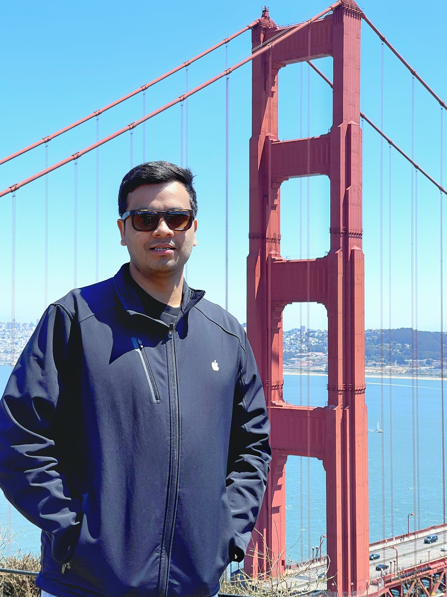

Sudhanshu Sharma
|  | Senior Project Associate,Indigenous 5G Testbed Project, |
About me
I am a researcher who is deeply interested in the efficiency of Life. I love exploring domains like wireless communication, information theory and Machine learning along with mathematics behind it. I enjoy writing algorithms in MATLAB and Python for Signal Processing and Communication. My hobbies are playing tennis( tennis aficionado ), reading sci-fi books (For books recommendation)
Employment
In 2015 I started my B.E. degree in Electronics and Communication from National Institute of engineering, Mysuru (NIE) during that time I have worked for several organizations as Research and Development Intern for nearly 33 months. After completing bachelors I started working for MMRFIC as Digital Signal Processing System Engineer and in late 2020 I joined IIT, Kanpur as Senior Project Associate for developing 5G physical layer algorithms for sub-6 and mmwave. Click here to know more
Education
Aug. 2015 - Jul. 2019, Bachelor of Engineering (B.E.), Electronics and Communication Engineering, NIE Mysuru, India.
Associated with


|


|